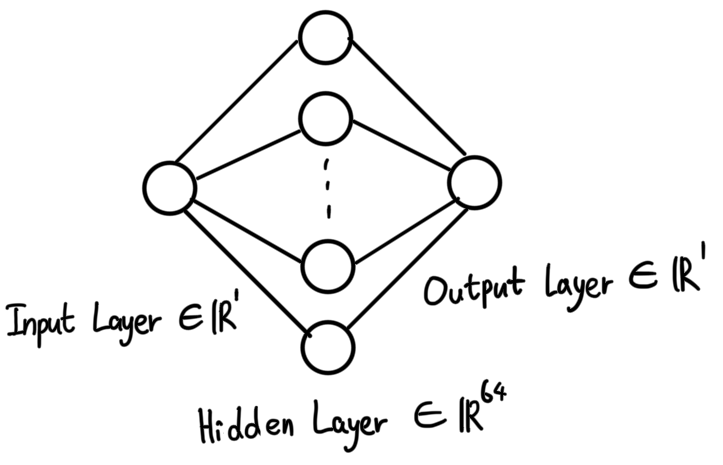
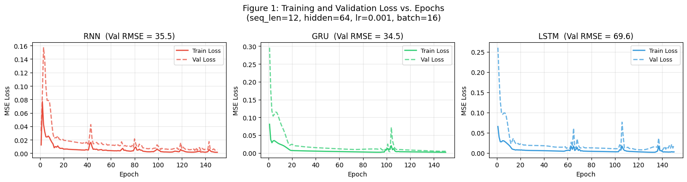
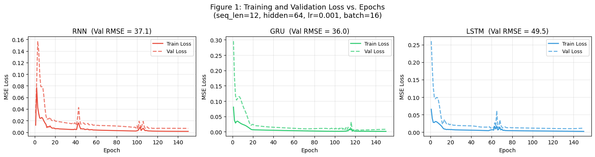
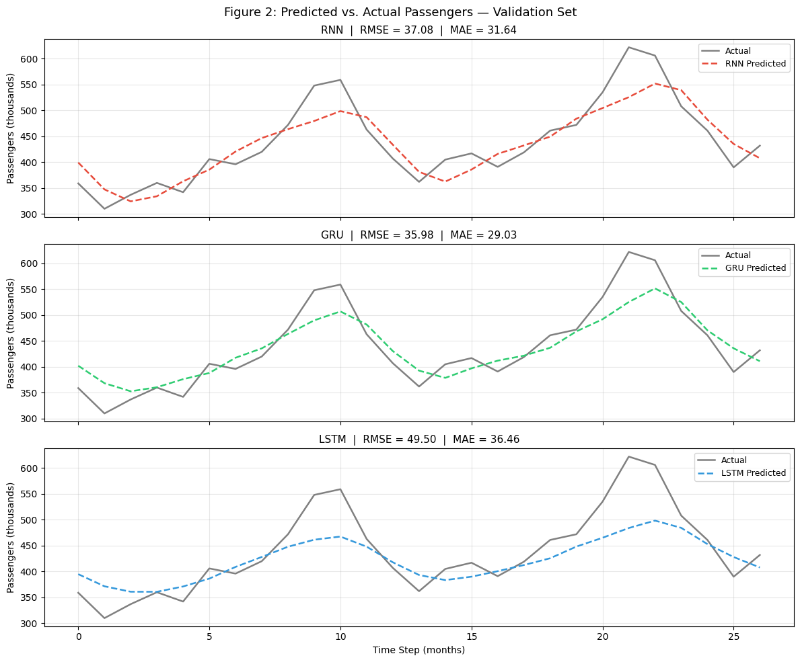

Hojung Lim · MASC 520 – Project 3 · USC Spring 2026

Figure 1: Shared recurrent network architecture — 64 hidden units, dropout, FC output
All three models share the same structure: a recurrent layer with 64 hidden units, a dropout layer (rate=0.0), and a fully connected output layer producing a single scalar. The vanilla RNN uses tanh activation; GRU and LSTM use gating mechanisms.
Dataset: 144 monthly passenger counts normalized to [0,1] with min-max scaling. Sliding window of length 12 (matching the seasonal period) creates input-output pairs. 80/20 temporal split: 105 training sequences, 27 validation sequences.
| Hyperparameter | Test 1 (Baseline) | Test 2 (Improved) |
|---|---|---|
| Epochs | 150 | 300 |
| Learning Rate | 0.001 | 0.005 |
| Batch Size | 16 | 16 |
| Optimizer | Adam | Adam |
| LR Scheduler | None | Plateau-based adaptive |
| Best-Model Checkpointing | No | Yes |
| Gradient Clipping | Max norm 1.0 | Max norm 1.0 |

Figure 2A: Training and Validation Loss Curves — RNN, GRU, LSTM (Test 1, seq_len=12, hidden=64, lr=0.001)

Figure 2B: Training and Validation Loss Curves — RNN, GRU, LSTM (Test 2, seq_len=12, hidden=64, lr=0.001)

Figure 3: Predictions vs. Actual Passengers — Validation Set (Test 2, lr=0.001)
| Learning Rate | Test 1 RMSE | Test 1 MAE | Test 2 RMSE | Test 2 MAE |
|---|---|---|---|---|
| 0.0001 | 76.71 | 67.14 | 74.61 | 59.87 |
| 0.001 | 69.64 | 57.61 | 49.50 | 36.46 |
| 0.005 ★ | 46.83 | 39.08 | 33.17 | 27.67 |
| 0.01 | 61.25 | 51.40 | 37.15 | 28.83 |
lr=0.005 + adaptive scheduler achieves the best RMSE of 33.17. The scheduler amplifies the benefit of a correct learning rate while providing robustness against suboptimal choices.
| Hidden Units | Parameters | Test 1 RMSE | Test 1 MAE | Test 2 RMSE | Test 2 MAE |
|---|---|---|---|---|---|
| 16 | 1,233 | 66.11 | 48.58 | 46.92 | 37.72 |
| 32 | 4,513 | 61.53 | 44.81 | 37.63 | 31.71 |
| 64 ★ | 17,217 | 69.64 | 57.61 | 33.17 | 27.67 |
| 128 | 67,201 | 44.72 | 38.63 | 37.62 | 32.11 |
In Test 2, RMSE improves steadily from 16 to 64 hidden units, then worsens at 128 due to overfitting on just 105 training sequences. 64 units provides the right capacity for this small dataset.